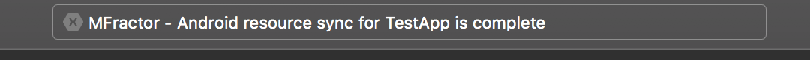
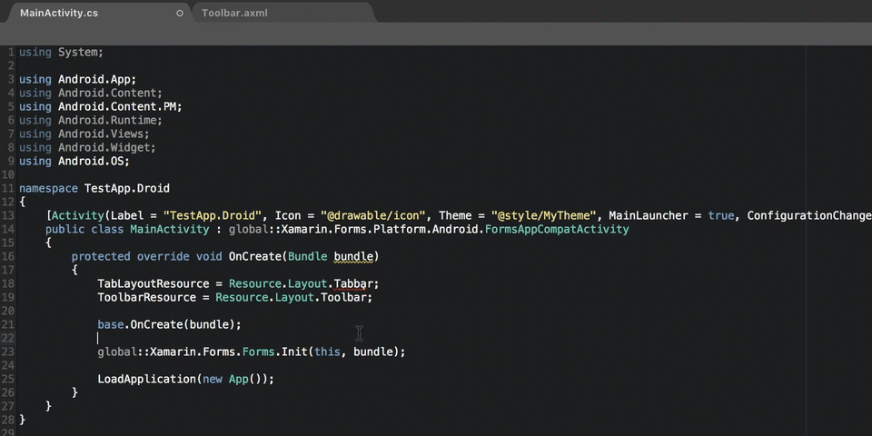
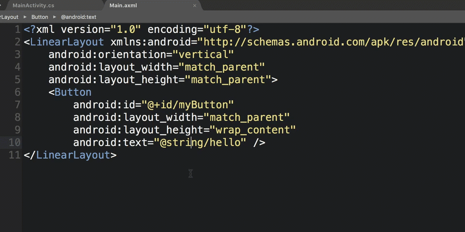

WORK IN PROGRESS
Xamarin.Android Quickstart
Learn to use the most handy features in MFractor for Xamarin.Android
Introduction
Welcome to the quick start guide for using MFractor with Xamarin.Android!
This document explains the most useful features of MFractor for Xamarin.Android.
Project Resource Indexing
When an Android project is opened, MFractor needs to index the projects resources; this is all files and folders under Resources\ including layouts, menus, drawables, strings, colors etc.
When the indexing operation finishes, you might see a status message in the top toolbar:

The indexing will generate a SQL database under a folder named .droidres; this database contains relational information about each of the Android projects within the current solution which powers most features in MFractor for Xamarin.Android.
Each time a resource document is edited, MFractor will re-index that particular file into .droidres database.
At any time you can force a complete re-index of your solution by selecting Tools in the main menu and then MFractor - Resync Solution Resources.
Resource Tooltips
Hover over a resource expression to view a tooltip that lists all configurations of that resource.
C# Expression
Resource.Layout.Toolbar
Xml Expression
@+id/toolbar
For example:

Go-To Resource Declaration
When the caret is inside a C# or Xml resource expression, you can press Command+D to jump to the implementation of that resource.
When a resource has multiple configurations, a selector dialog is displayed where you can select the specific configuration to jump to:

Resource IntelliSense
MFractor adds IntelliSense support for all Android resources.
To use resource IntelliSense, simply open a .axml or .xml file within your projects Resources folder and start typing.
A full list of supported resource IntelliSense modules can be found